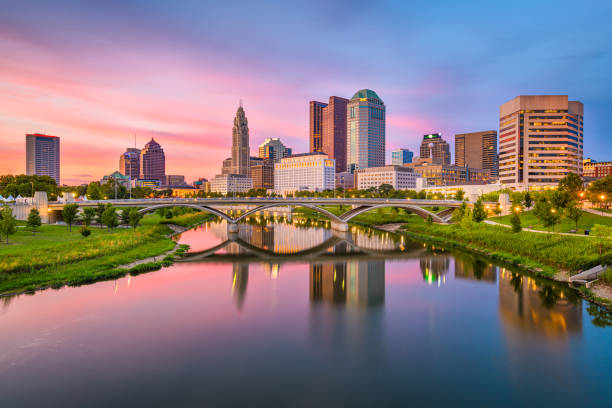

Welcome to Columbus, OH
O-H-I-O! Welcome to Columbus Uncovered, your ultimate guide to Columbus, Ohio. On this site you will find important info about the home of the Buckeyes and the capital of the state of Ohio. Columbus has a population of 905,748, making it the 14th-most populous city in the U.S. and the second most populous city in the Midwest!
The city is a hotspot for attractions and restaurants. In the downtown district, there are more than 100 restaurants in walking distance. There are also more than 20 Metro Parks in the city for all of the nature lovers out there. The city even has three professional sports teams: The Columbus Crew, The Columbus Blue Jackets, and the Columbus Clippers.
Many well-known companies were founded in Columbus or have their headquarters in the city. This list includes the famous Wendy's, which was founded in Columbus in 1969 and has a museum located here! Other well-known companies include White Castle, Donatos Pizza, Charleys Philly Steaks (founded on the OSU campus), Nationwide ("Is on your side"), and Red Roof Inn. Who knew so many companies had significant history in Columbus?
A Look at Columbus
